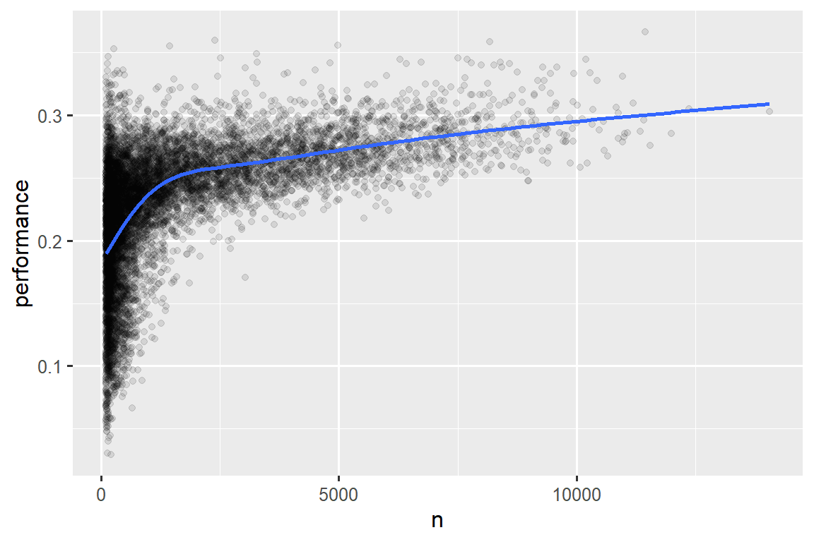

library(nycflights13)
#> Warning: package 'nycflights13' was built under R version 4.2.3
library(tidyverse)
#> Warning: package 'tidyverse' was built under R version 4.2.3
#> Warning: package 'ggplot2' was built under R version 4.2.3
#> Warning: package 'tibble' was built under R version 4.2.3
#> Warning: package 'tidyr' was built under R version 4.2.3
#> Warning: package 'readr' was built under R version 4.2.3
#> Warning: package 'purrr' was built under R version 4.2.3
#> Warning: package 'dplyr' was built under R version 4.2.3
#> Warning: package 'stringr' was built under R version 4.2.2
#> Warning: package 'forcats' was built under R version 4.2.3
#> Warning: package 'lubridate' was built under R version 4.2.3
#> ── Attaching core tidyverse packages ───────────────────── tidyverse 2.0.0 ──
#> ✔ dplyr 1.1.2 ✔ readr 2.1.4
#> ✔ forcats 1.0.0 ✔ stringr 1.5.0
#> ✔ ggplot2 3.4.2 ✔ tibble 3.2.1
#> ✔ lubridate 1.9.2 ✔ tidyr 1.3.0
#> ✔ purrr 1.0.1
#> ── Conflicts ─────────────────────────────────────── tidyverse_conflicts() ──
#> ✖ dplyr::filter() masks stats::filter()
#> ✖ dplyr::lag() masks stats::lag()
#> ℹ Use the conflicted package (<http://conflicted.r-lib.org/>) to force all conflicts to become errors4 Data transformation
You are reading the work-in-progress second edition of R for Data Science. This chapter is largely complete and just needs final proof reading. You can find the complete first edition at https://r4ds.had.co.nz.
4.1 Introduction
可视化是生成洞察力的重要工具，但很少有数据以完全符合你所需的形式提供，以制作你想要的图形。 通常情况下，你需要创建一些新的变量或摘要统计信息来回答你的问题，或者你可能只是想重命名变量或重新排序观测结果，以便更轻松地处理数据。 在本章中，你将学习如何使用 dplyr 包进行数据转换（data transformation），并使用关于 2013 年从纽约市出发的航班的新数据集来介绍这些内容，并且你还将学习更多相关的知识！
本章的目标是为你提供转换数据框的所有关键工具的概述。 我们将从对数据框的行和列进行操作的函数开始，然后再回到管道操作符的讨论，这是一个重要的工具，用于组合操作。 然后，我们将介绍如何使用分组进行操作。 最后，我们将通过一个案例研究展示这些函数的实际应用，并在后续章节中更详细地讨论这些函数，以便深入研究特定类型的数据 (e.g., numbers, strings, dates)。
4.1.1 Prerequisites
在本章中，我们将关注 dplyr 包，它是 tidyverse 的另一个核心成员。 我们将使用 nycflights13 包中的数据说明关键思想，并使用 ggplot2 帮助我们理解数据。
请仔细注意加载 tidyverse 时打印的冲突消息（conflicts message）。 它告诉你 dplyr 覆盖了 base R 中的一些函数。 如果你想在加载 dplyr 后使用这些函数的 base 版本，你需要使用它们的全名：stats::filter() 和 stats::lag()。 到目前为止，我们大多忽略了一个函数来自哪个包，因为大多数时候它并不重要。 但是，了解包可以帮助您找到帮助并找到相关函数，因此当我们需要准确了解某个函数来自哪个包时，我们将使用与 R 相同的语法：packagename::functionname()。
4.1.2 nycflights13
为了探索基本的 dplyr verbs，我们将使用 nycflights13::flights。 该数据集包含 2013 年从纽约市起飞的所有 336,776 航班。 数据来自美国 Bureau of Transportation Statistics，记录在 ?flights 中。
flights
#> # A tibble: 336,776 × 19
#> year month day dep_time sched_dep_time dep_delay arr_time sched_arr_time
#> <int> <int> <int> <int> <int> <dbl> <int> <int>
#> 1 2013 1 1 517 515 2 830 819
#> 2 2013 1 1 533 529 4 850 830
#> 3 2013 1 1 542 540 2 923 850
#> 4 2013 1 1 544 545 -1 1004 1022
#> 5 2013 1 1 554 600 -6 812 837
#> 6 2013 1 1 554 558 -4 740 728
#> # ℹ 336,770 more rows
#> # ℹ 11 more variables: arr_delay <dbl>, carrier <chr>, flight <int>, …flights 是一个 tibble，一种特殊类型的 data frame，tidyverse 使用它来避免一些常见的问题。 tibbles 和 data frame 之间最重要的区别是 tibbles 的打印方式； 它们是为大型数据集设计的，因此它们只显示前几行，并且只显示适合一个屏幕的列。 有几个选项可以查看所有内容。 如果您使用的是 RStudio，最方便的可能是 View(flights)，它将打开一个交互式的可滚动和可过滤的视图。 另外，您可以使用 print(flights, width = Inf) 来显示所有列，或使用 glimpse()：
glimpse(flights)
#> Rows: 336,776
#> Columns: 19
#> $ year <int> 2013, 2013, 2013, 2013, 2013, 2013, 2013, 2013, 2013…
#> $ month <int> 1, 1, 1, 1, 1, 1, 1, 1, 1, 1, 1, 1, 1, 1, 1, 1, 1, 1…
#> $ day <int> 1, 1, 1, 1, 1, 1, 1, 1, 1, 1, 1, 1, 1, 1, 1, 1, 1, 1…
#> $ dep_time <int> 517, 533, 542, 544, 554, 554, 555, 557, 557, 558, 55…
#> $ sched_dep_time <int> 515, 529, 540, 545, 600, 558, 600, 600, 600, 600, 60…
#> $ dep_delay <dbl> 2, 4, 2, -1, -6, -4, -5, -3, -3, -2, -2, -2, -2, -2,…
#> $ arr_time <int> 830, 850, 923, 1004, 812, 740, 913, 709, 838, 753, 8…
#> $ sched_arr_time <int> 819, 830, 850, 1022, 837, 728, 854, 723, 846, 745, 8…
#> $ arr_delay <dbl> 11, 20, 33, -18, -25, 12, 19, -14, -8, 8, -2, -3, 7,…
#> $ carrier <chr> "UA", "UA", "AA", "B6", "DL", "UA", "B6", "EV", "B6"…
#> $ flight <int> 1545, 1714, 1141, 725, 461, 1696, 507, 5708, 79, 301…
#> $ tailnum <chr> "N14228", "N24211", "N619AA", "N804JB", "N668DN", "N…
#> $ origin <chr> "EWR", "LGA", "JFK", "JFK", "LGA", "EWR", "EWR", "LG…
#> $ dest <chr> "IAH", "IAH", "MIA", "BQN", "ATL", "ORD", "FLL", "IA…
#> $ air_time <dbl> 227, 227, 160, 183, 116, 150, 158, 53, 140, 138, 149…
#> $ distance <dbl> 1400, 1416, 1089, 1576, 762, 719, 1065, 229, 944, 73…
#> $ hour <dbl> 5, 5, 5, 5, 6, 5, 6, 6, 6, 6, 6, 6, 6, 6, 6, 5, 6, 6…
#> $ minute <dbl> 15, 29, 40, 45, 0, 58, 0, 0, 0, 0, 0, 0, 0, 0, 0, 59…
#> $ time_hour <dttm> 2013-01-01 05:00:00, 2013-01-01 05:00:00, 2013-01-0…在这两个视图中，变量名称后跟缩写，告诉您每个变量的类型：<int> 是整数（integer）的缩写，<dbl> 是双精度（double）（又名实数）的缩写，<chr> 用于字符（character）（也称为字符串），<dttm> 用于日期时间（date-time）。 这些很重要，因为您可以对列执行的操作在很大程度上取决于其”类型”。
4.1.3 dplyr basics
您将学习主要的 dplyr verbs（functions），这将使您能够解决绝大多数数据操作挑战。 但在我们讨论它们的个体差异之前，有必要先说明一下它们的共同点：
第一个参数始终是一个 data frame。
随后的参数通常使用变量名称（不带引号）描述要对哪些列进行操作。
输出总是一个新的 data frame。
因为每个 verb 都擅长做一件事，解决复杂问题通常需要组合多个 verbs，我们将使用竖线 |> 来实现。 我们将在 Section 4.4 中更多地讨论管道，但简而言之，管道将其左侧的东西传递给右侧的函数，因此 x |> f(y) 等价于 f(x, y)，而 x |> f(y) |> g(z) 等价于 g(f(x, y), z)。 管道的最简单发音是 “then”。 即使您尚未了解详细信息，也可以了解以下代码：
dplyr 的 verbs 根据操作对象分为四组：rows, columns, groups, or tables。 在接下来的部分中，您将学习 rows、columns 和 groups 最重要的 verbs，然后我们将回到 Chapter 20 中用于 tables 的连接动词。 让我们开始吧！
4.2 Rows
对数据集的行进行操作的最重要的 verbs 是 filter()，它改变了哪些行存在而不改变它们的顺序，以及 arrange()，它改变了行的顺序而不改变存在的行。 这两个函数只影响行，列保持不变。 我们还将讨论 distinct()，它可以找到具有唯一值的行，但与 arrange() 和 filter() 不同的是，它还可以选择性地修改列。
4.2.1 filter()
filter() 允许您根据列的值保留行1。 第一个参数是 data frame。 第二个和后续参数是必须为真才能保留该行的条件。 例如，我们可以找到所有晚点超过 120 分钟（两小时）的航班：
flights |>
filter(dep_delay > 120)
#> # A tibble: 9,723 × 19
#> year month day dep_time sched_dep_time dep_delay arr_time sched_arr_time
#> <int> <int> <int> <int> <int> <dbl> <int> <int>
#> 1 2013 1 1 848 1835 853 1001 1950
#> 2 2013 1 1 957 733 144 1056 853
#> 3 2013 1 1 1114 900 134 1447 1222
#> 4 2013 1 1 1540 1338 122 2020 1825
#> 5 2013 1 1 1815 1325 290 2120 1542
#> 6 2013 1 1 1842 1422 260 1958 1535
#> # ℹ 9,717 more rows
#> # ℹ 11 more variables: arr_delay <dbl>, carrier <chr>, flight <int>, …除了 >（大于），您还可以使用 >=（大于或等于）、<（小于）、<=（小于或等于）、== （等于）和 !=（不等于）。 您还可以将条件与 & 或 , 结合起来以指示 “and”（检查两个条件）或与 | 结合以指示 “or”（检查任一条件）：
# Flights that departed on January 1
flights |>
filter(month == 1 & day == 1)
#> # A tibble: 842 × 19
#> year month day dep_time sched_dep_time dep_delay arr_time sched_arr_time
#> <int> <int> <int> <int> <int> <dbl> <int> <int>
#> 1 2013 1 1 517 515 2 830 819
#> 2 2013 1 1 533 529 4 850 830
#> 3 2013 1 1 542 540 2 923 850
#> 4 2013 1 1 544 545 -1 1004 1022
#> 5 2013 1 1 554 600 -6 812 837
#> 6 2013 1 1 554 558 -4 740 728
#> # ℹ 836 more rows
#> # ℹ 11 more variables: arr_delay <dbl>, carrier <chr>, flight <int>, …
# Flights that departed in January or February
flights |>
filter(month == 1 | month == 2)
#> # A tibble: 51,955 × 19
#> year month day dep_time sched_dep_time dep_delay arr_time sched_arr_time
#> <int> <int> <int> <int> <int> <dbl> <int> <int>
#> 1 2013 1 1 517 515 2 830 819
#> 2 2013 1 1 533 529 4 850 830
#> 3 2013 1 1 542 540 2 923 850
#> 4 2013 1 1 544 545 -1 1004 1022
#> 5 2013 1 1 554 600 -6 812 837
#> 6 2013 1 1 554 558 -4 740 728
#> # ℹ 51,949 more rows
#> # ℹ 11 more variables: arr_delay <dbl>, carrier <chr>, flight <int>, …组合 | 和 == 时有一个有用的快捷方式：%in%。 它保留变量等于右侧值之一的行：
# A shorter way to select flights that departed in January or February
flights |>
filter(month %in% c(1, 2))
#> # A tibble: 51,955 × 19
#> year month day dep_time sched_dep_time dep_delay arr_time sched_arr_time
#> <int> <int> <int> <int> <int> <dbl> <int> <int>
#> 1 2013 1 1 517 515 2 830 819
#> 2 2013 1 1 533 529 4 850 830
#> 3 2013 1 1 542 540 2 923 850
#> 4 2013 1 1 544 545 -1 1004 1022
#> 5 2013 1 1 554 600 -6 812 837
#> 6 2013 1 1 554 558 -4 740 728
#> # ℹ 51,949 more rows
#> # ℹ 11 more variables: arr_delay <dbl>, carrier <chr>, flight <int>, …我们将在 Chapter 13 中更详细地回到这些比较和逻辑运算符。
当你运行 filter() 时，dplyr 执行过滤操作，创建一个新的数据框，然后打印它。 它不会修改现有的 flights 数据集，因为 dplyr 函数从不修改其输入。 要保存结果，您需要使用赋值运算符，<-：
jan1 <- flights |>
filter(month == 1 & day == 1)4.2.2 Common mistakes
当您开始使用 R 时，最容易犯的错误是在测试相等性时使用 = 而不是 ==。 filter() 会在发生这种情况时通知您：
flights |>
filter(month = 1)
#> Error in `filter()`:
#> ! We detected a named input.
#> ℹ This usually means that you've used `=` instead of `==`.
#> ℹ Did you mean `month == 1`?另一个错误是你像用英语那样写 “or” 语句：
flights |>
filter(month == 1 | 2)这个能够工作，因为它不会抛出错误，但它不会得到你想要的结果，因为 | 首先检查条件 month == 1 然后检查条件 2，这不是一个明智的检查条件。 我们将在 Section 16.6.2 中详细了解这里发生的事情以及原因。
4.2.3 arrange()
arrange() 根据列（columns）的值更改行（rows）的顺序。 它接受一个 data frame 和一组要按顺序排列的列名（column names）（或更复杂的表达式）。 如果提供多个列名（column names），每个额外的列将用于解决前面列的值相等的情况。 例如，下面的代码按照出发时间排序，该时间跨越了四列。 我们首先获取最早的年份（years），然后在一年内获取最早的月份（months），以此类推。
flights |>
arrange(year, month, day, dep_time)
#> # A tibble: 336,776 × 19
#> year month day dep_time sched_dep_time dep_delay arr_time sched_arr_time
#> <int> <int> <int> <int> <int> <dbl> <int> <int>
#> 1 2013 1 1 517 515 2 830 819
#> 2 2013 1 1 533 529 4 850 830
#> 3 2013 1 1 542 540 2 923 850
#> 4 2013 1 1 544 545 -1 1004 1022
#> 5 2013 1 1 554 600 -6 812 837
#> 6 2013 1 1 554 558 -4 740 728
#> # ℹ 336,770 more rows
#> # ℹ 11 more variables: arr_delay <dbl>, carrier <chr>, flight <int>, …在 arrange() 内部，您可以对列使用 desc() 函数，以便按降序（从大到小）重新排序数据框。 例如，以下代码按延误时间从最长到最短的顺序排序航班：
flights |>
arrange(desc(dep_delay))
#> # A tibble: 336,776 × 19
#> year month day dep_time sched_dep_time dep_delay arr_time sched_arr_time
#> <int> <int> <int> <int> <int> <dbl> <int> <int>
#> 1 2013 1 9 641 900 1301 1242 1530
#> 2 2013 6 15 1432 1935 1137 1607 2120
#> 3 2013 1 10 1121 1635 1126 1239 1810
#> 4 2013 9 20 1139 1845 1014 1457 2210
#> 5 2013 7 22 845 1600 1005 1044 1815
#> 6 2013 4 10 1100 1900 960 1342 2211
#> # ℹ 336,770 more rows
#> # ℹ 11 more variables: arr_delay <dbl>, carrier <chr>, flight <int>, …请注意，行的数量没有改变 – 我们只是重新排列了数据，而没有对其进行筛选。
4.2.4 distinct()
distinct() 函数用于在数据集中查找所有唯一的行，因此从技术上讲，它主要操作行。 然而，大多数情况下，您希望获取某些变量的唯一组合，因此您也可以选择性地提供列名：
# Remove duplicate rows, if any
flights |>
distinct()
#> # A tibble: 336,776 × 19
#> year month day dep_time sched_dep_time dep_delay arr_time sched_arr_time
#> <int> <int> <int> <int> <int> <dbl> <int> <int>
#> 1 2013 1 1 517 515 2 830 819
#> 2 2013 1 1 533 529 4 850 830
#> 3 2013 1 1 542 540 2 923 850
#> 4 2013 1 1 544 545 -1 1004 1022
#> 5 2013 1 1 554 600 -6 812 837
#> 6 2013 1 1 554 558 -4 740 728
#> # ℹ 336,770 more rows
#> # ℹ 11 more variables: arr_delay <dbl>, carrier <chr>, flight <int>, …
# Find all unique origin and destination pairs
flights |>
distinct(origin, dest)
#> # A tibble: 224 × 2
#> origin dest
#> <chr> <chr>
#> 1 EWR IAH
#> 2 LGA IAH
#> 3 JFK MIA
#> 4 JFK BQN
#> 5 LGA ATL
#> 6 EWR ORD
#> # ℹ 218 more rows另外，如果您在筛选唯一行时想要保留其他列，可以使用 .keep_all = TRUE 选项。
flights |>
distinct(origin, dest, .keep_all = TRUE)
#> # A tibble: 224 × 19
#> year month day dep_time sched_dep_time dep_delay arr_time sched_arr_time
#> <int> <int> <int> <int> <int> <dbl> <int> <int>
#> 1 2013 1 1 517 515 2 830 819
#> 2 2013 1 1 533 529 4 850 830
#> 3 2013 1 1 542 540 2 923 850
#> 4 2013 1 1 544 545 -1 1004 1022
#> 5 2013 1 1 554 600 -6 812 837
#> 6 2013 1 1 554 558 -4 740 728
#> # ℹ 218 more rows
#> # ℹ 11 more variables: arr_delay <dbl>, carrier <chr>, flight <int>, …并非巧合，所有这些唯一的航班都是在 1 月 1 日：distinct() 函数将找到数据集中唯一行的第一个出现，并丢弃其余的重复行。
如果您想找到每个唯一行的出现次数，最好将 distinct() 替换为 count() 函数，并使用 sort = TRUE 参数按出现次数的降序排列它们。 您可以在 Section 14.3 中了解更多关于 count() 函数的内容。
flights |>
count(origin, dest, sort = TRUE)
#> # A tibble: 224 × 3
#> origin dest n
#> <chr> <chr> <int>
#> 1 JFK LAX 11262
#> 2 LGA ATL 10263
#> 3 LGA ORD 8857
#> 4 JFK SFO 8204
#> 5 LGA CLT 6168
#> 6 EWR ORD 6100
#> # ℹ 218 more rows4.2.5 Exercises
-
在每个条件的单个管道中，找到满足条件的所有航班（flights）：
- Had an arrival delay of two or more hours
- Flew to Houston (
IAHorHOU) - Were operated by United, American, or Delta
- Departed in summer (July, August, and September)
- Arrived more than two hours late, but didn’t leave late
- Were delayed by at least an hour, but made up over 30 minutes in flight
对
flights进行排序以查找起飞延误（departure delays）时间最长的航班。 查找早上最早起飞的航班。对
flights进行排序以找到最快的航班。 （提示：尝试在你的函数中包含一个数学计算。）2013 年每天都有航班吗？
哪些航班飞行距离最远？ 哪个航班飞行距离最短？
如果同时使用
filter()和arrange()，那么使用它们的顺序有什么关系吗？ 为什么/为什么不？ 考虑结果以及功能必须完成的工作量。
4.3 Columns
有四个重要的 verbs 可以在不更改行的情况下影响列：mutate() 创建从现有列派生的新列，select() 更改存在的列，rename() 更改列的名称， relocate() 更改列的位置。
4.3.1 mutate()
mutate() 的工作是添加根据现有列计算的新列。 在转换（transform）章节中，您将学习大量可用于操作不同类型变量的函数。 现在，我们将坚持使用基本代数，它允许我们计算 gain、延迟航班在空中补足的时间以及以英里/小时为单位的 speed：
flights |>
mutate(
gain = dep_delay - arr_delay,
speed = distance / air_time * 60
)
#> # A tibble: 336,776 × 21
#> year month day dep_time sched_dep_time dep_delay arr_time sched_arr_time
#> <int> <int> <int> <int> <int> <dbl> <int> <int>
#> 1 2013 1 1 517 515 2 830 819
#> 2 2013 1 1 533 529 4 850 830
#> 3 2013 1 1 542 540 2 923 850
#> 4 2013 1 1 544 545 -1 1004 1022
#> 5 2013 1 1 554 600 -6 812 837
#> 6 2013 1 1 554 558 -4 740 728
#> # ℹ 336,770 more rows
#> # ℹ 13 more variables: arr_delay <dbl>, carrier <chr>, flight <int>, …默认情况下，mutate() 会在数据集的右侧添加新列，这使得很难看出这里发生了什么。 我们可以使用 .before 参数将变量添加到左侧 2：
flights |>
mutate(
gain = dep_delay - arr_delay,
speed = distance / air_time * 60,
.before = 1
)
#> # A tibble: 336,776 × 21
#> gain speed year month day dep_time sched_dep_time dep_delay arr_time
#> <dbl> <dbl> <int> <int> <int> <int> <int> <dbl> <int>
#> 1 -9 370. 2013 1 1 517 515 2 830
#> 2 -16 374. 2013 1 1 533 529 4 850
#> 3 -31 408. 2013 1 1 542 540 2 923
#> 4 17 517. 2013 1 1 544 545 -1 1004
#> 5 19 394. 2013 1 1 554 600 -6 812
#> 6 -16 288. 2013 1 1 554 558 -4 740
#> # ℹ 336,770 more rows
#> # ℹ 12 more variables: sched_arr_time <int>, arr_delay <dbl>, …. 表示 .before 是函数的参数，而不是我们正在创建的第三个新变量的名称。 您还可以使用 .after 来在变量之后添加，并且在 .before 和 .after 中都可以使用变量名而不是位置。 例如，我们可以在 day 之后添加新变量：
flights |>
mutate(
gain = dep_delay - arr_delay,
speed = distance / air_time * 60,
.after = day
)或者，您可以使用 .keep 参数控制保留哪些变量。 一个特别有用的参数是 "used"，它指定我们只保留在 mutate() 步骤中涉及或创建的列。 例如，以下输出将仅包含变量 dep_delay, arr_delay, air_time, gain, hours, and gain_per_hour。
flights |>
mutate(
gain = dep_delay - arr_delay,
hours = air_time / 60,
gain_per_hour = gain / hours,
.keep = "used"
)请注意，由于我们尚未将上述计算的结果分配回 flights，因此新变量 gain,、hours、gain_per_hour 只会被打印出来，而不会存储在数据框中。 如果我们希望它们在数据框中可用以供将来使用，我们应该仔细考虑是否要将结果分配回 flights，用更多变量覆盖原始数据框，或者分配给一个新对象 . 通常，正确的答案是一个新对象，该对象以信息性命名以指示其内容，例如 delay_gain，但您也可能有充分的理由覆盖 flights。
4.3.2 select()
获取包含数百甚至数千个变量的数据集并不少见。 在这种情况下，第一个挑战通常只是关注您感兴趣的变量。 select() 允许您使用基于变量名称的操作快速放大有用的子集：
-
按名称选择列：
flights |> select(year, month, day) -
选择 year 和 day（含）之间的所有列：
flights |> select(year:day) -
选择除了 year 到 day（含）以外的所有列：
flights |> select(!year:day)您也可以使用
-代替!（您很可能会在野外看到它）；我们推荐!因为它读起来像 “not”，并且与&和|结合得很好。 -
选择所有 characters 列：
您可以在 select() 中使用许多辅助函数：
-
starts_with("abc"): 匹配以 “abc” 开头的名称。 -
ends_with("xyz"): 匹配以 “xyz” 结尾的名称。 -
contains("ijk"): 匹配包含 “ijk” 的名称。 -
num_range("x", 1:3): 匹配x1、x2和x3。
有关详细信息，请参阅 ?select。 一但你了解正则表达式（the topic of Chapter 16），您还可以使用 matches() 来选择与模式匹配的变量。
您可以在使用 = 在 select() 时重命名变量。 新名称出现在 = 的左侧，旧变量出现在右侧：
flights |>
select(tail_num = tailnum)
#> # A tibble: 336,776 × 1
#> tail_num
#> <chr>
#> 1 N14228
#> 2 N24211
#> 3 N619AA
#> 4 N804JB
#> 5 N668DN
#> 6 N39463
#> # ℹ 336,770 more rows
4.3.3 rename()
如果你想保留所有现有变量并且只想重命名一些变量，你可以使用 rename() 而不是 select()：
flights |>
rename(tail_num = tailnum)
#> # A tibble: 336,776 × 19
#> year month day dep_time sched_dep_time dep_delay arr_time sched_arr_time
#> <int> <int> <int> <int> <int> <dbl> <int> <int>
#> 1 2013 1 1 517 515 2 830 819
#> 2 2013 1 1 533 529 4 850 830
#> 3 2013 1 1 542 540 2 923 850
#> 4 2013 1 1 544 545 -1 1004 1022
#> 5 2013 1 1 554 600 -6 812 837
#> 6 2013 1 1 554 558 -4 740 728
#> # ℹ 336,770 more rows
#> # ℹ 11 more variables: arr_delay <dbl>, carrier <chr>, flight <int>, …如果你有一堆命名不一致的列，并且手动修复它们会很痛苦，请查看 janitor::clean_names()，它提供了一些有用的自动清理。
4.3.4 relocate()
使用 relocate() 移动变量。 您可能希望将相关变量收集在一起或将重要变量移到前面。 默认情况下，relocate() 将变量移动到前面：
flights |>
relocate(time_hour, air_time)
#> # A tibble: 336,776 × 19
#> time_hour air_time year month day dep_time sched_dep_time
#> <dttm> <dbl> <int> <int> <int> <int> <int>
#> 1 2013-01-01 05:00:00 227 2013 1 1 517 515
#> 2 2013-01-01 05:00:00 227 2013 1 1 533 529
#> 3 2013-01-01 05:00:00 160 2013 1 1 542 540
#> 4 2013-01-01 05:00:00 183 2013 1 1 544 545
#> 5 2013-01-01 06:00:00 116 2013 1 1 554 600
#> 6 2013-01-01 05:00:00 150 2013 1 1 554 558
#> # ℹ 336,770 more rows
#> # ℹ 12 more variables: dep_delay <dbl>, arr_time <int>, …您还可以使用 .before 和 .after 参数指定放置它们的位置，就像在 mutate() 中一样：
flights |>
relocate(year:dep_time, .after = time_hour)
flights |>
relocate(starts_with("arr"), .before = dep_time)4.3.5 Exercises
比较
dep_time,sched_dep_time, anddep_delay。 您认为这三个数字之间有何关联？尽可能多地集思广益，从
flights中选择dep_time、dep_delay、arr_time和arr_delay。如果您在
select()调用中多次指定同一个变量的名称，会发生什么情况？-
any_of()函数有什么作用？ 为什么将它与该载体结合使用会有所帮助？variables <- c("year", "month", "day", "dep_delay", "arr_delay") -
运行以下代码的结果是否让您感到惊讶？ 默认情况下，select helpers 如何处理大写和小写？ 你怎么能改变这个默认值？
将
air_time重命名为air_time_min以指示测量单位并将其移至数据框的开头。-
为什么以下不起作用，错误是什么意思？
4.4 The pipe
我们已经在前面向您展示了管道（pipe）的简单示例，但当您开始组合多个 verbs 时，它的真正威力就会显现出来。 例如，假设您想找到飞往休斯顿 IAH 机场的快速航班：您需要结合使用 filter()、mutate()、select() 和 arrange()：
flights |>
filter(dest == "IAH") |>
mutate(speed = distance / air_time * 60) |>
select(year:day, dep_time, carrier, flight, speed) |>
arrange(desc(speed))
#> # A tibble: 7,198 × 7
#> year month day dep_time carrier flight speed
#> <int> <int> <int> <int> <chr> <int> <dbl>
#> 1 2013 7 9 707 UA 226 522.
#> 2 2013 8 27 1850 UA 1128 521.
#> 3 2013 8 28 902 UA 1711 519.
#> 4 2013 8 28 2122 UA 1022 519.
#> 5 2013 6 11 1628 UA 1178 515.
#> 6 2013 8 27 1017 UA 333 515.
#> # ℹ 7,192 more rows尽管这个管道有四个步骤，但它很容易浏览，因为 verbs 出现在每一行的开头：从 flights 数据开始，then filter, then mutate, then select, then arrange。
如果我们没有管道会怎样？ 我们可以将每个函数调用嵌套在前一个调用中：
或者我们可以使用一堆中间对象：
虽然这两种形式都有它们的时间和地点，但管道通常会产生更易于编写和阅读的数据分析代码。
要将管道添加到代码中，我们建议使用内置键盘快捷键 Ctrl/Cmd + Shift + M。 您需要对 RStudio 选项进行一项更改，以使用 |> 而不是 %>%，如 Figure 4.1 中所示；稍后将详细介绍 %>%。

|>, make sure the “Use native pipe operator” option is checked.
magrittr
如果您已经使用 tidyverse 一段时间，您可能熟悉 magrittr 包提供的 %>% 管道。 magrittr 包包含在核心 tidyverse 中，因此您可以在加载 tidyverse 时使用 %>%：
对于简单的情况，|> 和 %>% 的行为相同。 那么为什么我们推荐 base pipe（|>）呢？ 首先，因为它是 base R 的一部分，所以它始终可供您使用，即使您不使用 tidyverse。 其次，|> 比 %>% 简单得多：从 2014 年发明 %>% 到 2021 年将 |> 包含在 R 4.1.0 之间，我们对管道有了更好地了解。 这允许基本实现放弃不常用和不太重要的功能。
4.5 Groups
到目前为止，您已经了解了处理行和列的函数。 当您添加与组（groups）一起工作的能力时，dplyr 变得更加强大。 在本节中，我们将重点关注最重要的函数：group_by()、summarize() 和 slice 函数系列。
4.5.1 group_by()
使用 group_by() 将您的数据集分成对您的分析有意义的组：
flights |>
group_by(month)
#> # A tibble: 336,776 × 19
#> # Groups: month [12]
#> year month day dep_time sched_dep_time dep_delay arr_time sched_arr_time
#> <int> <int> <int> <int> <int> <dbl> <int> <int>
#> 1 2013 1 1 517 515 2 830 819
#> 2 2013 1 1 533 529 4 850 830
#> 3 2013 1 1 542 540 2 923 850
#> 4 2013 1 1 544 545 -1 1004 1022
#> 5 2013 1 1 554 600 -6 812 837
#> 6 2013 1 1 554 558 -4 740 728
#> # ℹ 336,770 more rows
#> # ℹ 11 more variables: arr_delay <dbl>, carrier <chr>, flight <int>, …group_by() 不会更改数据，但是，如果您仔细查看输出，您会注意到输出表明它是按 month 分组的（Groups: month [12]）。 这意味着后续操作现在将按 month 进行。 group_by() 将这个分组特征（称为类）添加到数据框，这改变了应用于数据的后续 verbs 的行为。
4.5.2 summarize()
最重要的分组操作是 summary，如果用于计算单个汇总统计数据，则会将数据框减少为每个组只有一行。 在 dplyr 中，此操作由 summarize()3 执行，如下例所示，它按月计算平均出发延迟：
呃！ 出了点问题，我们所有的结果都是 NA（发音为”N-A”），R 的缺失值符号。 发生这种情况是因为一些观察到的航班在延误列中缺少数据，因此当我们计算包括这些值的平均值时，我们得到了 NA 结果。 我们将在 Chapter 19 中回来详细讨论缺失值，但现在我们将告诉 mean() 函数通过将参数 na.rm 设置为 TRUE 来忽略所有缺失值：
您可以在一次调用 summarize() 中创建任意数量的 summaries。 您将在接下来的章节中学习各种有用的 summaries，但一个非常有用的 summary 是 n()，它返回每组中的行数：
Means 和 counts 可以让你在数据科学中走得更远！
4.5.3 The slice_ functions
有五个方便的函数可让您提取每个组中的特定行：
-
df |> slice_head(n = 1)从每组中取出第一行。 -
df |> slice_tail(n = 1)从每组中取出最后一行。 -
df |> slice_min(x, n = 1)获取列x中具有最小值的行。 -
df |> slice_max(x, n = 1)获取列x中具有最大值的行。 -
df |> slice_sample(n = 1)取一个随机行。
您可以改变 n 以选择多行，或者不使用 n =，您可以使用 prop = 0.1 来选择（例如）每组中 10% 的行。 例如，以下代码查找到达每个目的地时最晚延误的航班：
flights |>
group_by(dest) |>
slice_max(arr_delay, n = 1) |>
relocate(dest)
#> # A tibble: 108 × 19
#> # Groups: dest [105]
#> dest year month day dep_time sched_dep_time dep_delay arr_time
#> <chr> <int> <int> <int> <int> <int> <dbl> <int>
#> 1 ABQ 2013 7 22 2145 2007 98 132
#> 2 ACK 2013 7 23 1139 800 219 1250
#> 3 ALB 2013 1 25 123 2000 323 229
#> 4 ANC 2013 8 17 1740 1625 75 2042
#> 5 ATL 2013 7 22 2257 759 898 121
#> 6 AUS 2013 7 10 2056 1505 351 2347
#> # ℹ 102 more rows
#> # ℹ 11 more variables: sched_arr_time <int>, arr_delay <dbl>, …请注意，有 105 个目的地（destinations），但我们在这里得到 108 行。 这是怎么回事？ slice_min() 和 slice_max() 保持绑定值，所以 n = 1 意味着给我们所有具有最高值的行。 如果您只想每组一行，您可以设置 with_ties = FALSE。
这类似于使用 summarize() 计算最大延迟，但是您得到的是整个对应行（如果有平局则为行）而不是单个汇总统计数据。
4.5.4 Grouping by multiple variables
您可以使用多个变量创建 groups。 例如，我们可以为每个日期创建一个 group。
daily <- flights |>
group_by(year, month, day)
daily
#> # A tibble: 336,776 × 19
#> # Groups: year, month, day [365]
#> year month day dep_time sched_dep_time dep_delay arr_time sched_arr_time
#> <int> <int> <int> <int> <int> <dbl> <int> <int>
#> 1 2013 1 1 517 515 2 830 819
#> 2 2013 1 1 533 529 4 850 830
#> 3 2013 1 1 542 540 2 923 850
#> 4 2013 1 1 544 545 -1 1004 1022
#> 5 2013 1 1 554 600 -6 812 837
#> 6 2013 1 1 554 558 -4 740 728
#> # ℹ 336,770 more rows
#> # ℹ 11 more variables: arr_delay <dbl>, carrier <chr>, flight <int>, …当您 summarize 由多个变量分组的 tibble 时，每个 summary 都会剥离最后一组。 事后看来，这不是使该功能正常工作的好方法，但在不破坏现有代码的情况下很难进行更改。 为了使发生的事情一目了然，dplyr 会显示一条消息，告诉您如何更改此行为：
如果您对此行为感到满意，您可以明确请求它以抑制消息：
或者，通过设置不同的值来更改默认行为，例如，"drop" 删除所有分组或 "keep" 保留相同的组。
4.5.5 Ungrouping
您可能还想在不使用 summarize() 的情况下从数据框中删除分组。 你可以用 ungroup() 来做到这一点。
daily |>
ungroup()
#> # A tibble: 336,776 × 19
#> year month day dep_time sched_dep_time dep_delay arr_time sched_arr_time
#> <int> <int> <int> <int> <int> <dbl> <int> <int>
#> 1 2013 1 1 517 515 2 830 819
#> 2 2013 1 1 533 529 4 850 830
#> 3 2013 1 1 542 540 2 923 850
#> 4 2013 1 1 544 545 -1 1004 1022
#> 5 2013 1 1 554 600 -6 812 837
#> 6 2013 1 1 554 558 -4 740 728
#> # ℹ 336,770 more rows
#> # ℹ 11 more variables: arr_delay <dbl>, carrier <chr>, flight <int>, …现在让我们看看当您汇总未分组的数据框时会发生什么。
您会返回一行，因为 dplyr 将未分组数据框中的所有行视为属于一个组。
4.5.6 .by
dplyr 1.1.0 包括一个新的、实验性的、用于每个操作分组的语法，即 .by 参数。 group_by() 和 ungroup() 不会消失，但您现在还可以使用 .by 参数在单个操作中进行分组：
或者如果你想按多个变量分组：
.by 适用于所有动词，优点是您不需要使用 .groups 参数来取消分组消息或在完成后使用 ungroup()。
我们在本章中没有关注这个语法，因为在我们写这本书的时候它是非常新的。 我们确实想提及它，因为我们认为它有很多希望并且很可能很受欢迎。 您可以在 dplyr 1.1.0 博客文章 中了解更多信息。
4.5.7 Exercises
哪家航空公司的平均延误最严重？ 挑战：你能分清糟糕机场与糟糕承运人的影响吗？ 为什么/为什么不？ （提示：考虑
flights |> group_by(carrier, dest) |> summarize(n())）找出从每个目的地出发时延误最严重的航班。
一天中的延迟如何变化。 用一个图说明你的答案。
如果您向
slice_min()和相关函数提供负数n会发生什么？根据您刚刚学习的 dplyr verbs 解释
count()的作用。count()的sort参数有什么作用？-
假设我们有以下微型数据框：
-
写下您认为输出的样子，然后检查您是否正确，并描述
group_by()的作用。df |> group_by(y) -
写下您认为输出的样子，然后检查您是否正确，并描述
arrange()的作用。 还要评论它与 (a) 部分中的group_by()有何不同？df |> arrange(y) -
写下您认为输出的样子，然后检查您是否正确，并描述 pipeline 的作用。
-
写下您认为输出的样子，然后检查您是否正确，并描述 pipeline 的作用。 然后，评论消息的内容。
-
写下您认为输出的样子，然后检查您是否正确，并描述 pipeline 的作用。 输出与 (d) 部分中的输出有何不同。
-
写下您认为输出的样子，然后检查您是否正确，并描述 pipeline 的作用。 两条 pipelines 的输出有何不同？
-
4.6 Case study: aggregates and sample size
每当您进行任何聚合（aggregation）时，包含一个计数 (n()) 总是一个好主意。 这样，您就可以确保您不会根据非常少量的数据得出结论。 我们将使用 Lahman 包中的一些 baseball 数据来证明这一点。 具体来说，我们将比较球员击球次数 (H) 与他们尝试将球投入比赛的次数 (AB) 的比例：
batters <- Lahman::Batting |>
group_by(playerID) |>
summarize(
performance = sum(H, na.rm = TRUE) / sum(AB, na.rm = TRUE),
n = sum(AB, na.rm = TRUE)
)
batters
#> # A tibble: 20,469 × 3
#> playerID performance n
#> <chr> <dbl> <int>
#> 1 aardsda01 0 4
#> 2 aaronha01 0.305 12364
#> 3 aaronto01 0.229 944
#> 4 aasedo01 0 5
#> 5 abadan01 0.0952 21
#> 6 abadfe01 0.111 9
#> # ℹ 20,463 more rows当我们绘制击球手的技能（以击球率 performance 衡量）与击球机会的数量（以击球次数 n 衡量）之间的关系时，您会看到两种模式：
在击球次数较少的球员中，
performance的差异更大。 该图的形状非常有特色：每当您绘制平均值（或其他汇总统计数据）与组大小的关系时，您都会看到变异随着样本大小的增加而减小4。技能（
performance）和击球机会 (n) 之间存在正相关关系，因为球队希望给最好的击球手最多的击球机会。
batters |>
filter(n > 100) |>
ggplot(aes(x = n, y = performance)) +
geom_point(alpha = 1 / 10) +
geom_smooth(se = FALSE)
请注意组合 ggplot2 和 dplyr 的便利模式。 您只需要记住从用于数据集处理的 |> 切换到用于向绘图添加图层的 + 。
这对排名也有重要影响。 如果你天真地按 desc(performance) 排序，平均击球率最好的人显然是那些尝试将球打入比赛并碰巧被击中的人，他们不一定是技术最好的球员 :
您可以在 http://varianceexplained.org/r/empirical_bayes_baseball/ 和 https://www.evanmiller.org/how-not-to-sort-by-average-rating.html 找到这个问题的一个很好的解释以及如何克服它。
4.7 Summary
在本章中，您学习了 dplyr 提供的用于处理 data frames 的工具。 这些工具大致分为三类：操作行的工具（如 filter() 和 arrange()），操作列的工具（如 select() 和 mutate()），以及那些 操纵组的工具（如 group_by() 和 summarize()）。 在本章中，我们重点介绍了这些 “whole data frame” 工具，但您还没有学到很多关于可以使用单个变量做什么的知识。 我们将在本书的 Transform 部分回到这一点，每一章都会为您提供用于特定类型变量的工具。
在下一章中，我们将回到工作流来讨论代码风格的重要性，让您的代码井井有条，以便您和其他人轻松阅读和理解您的代码。